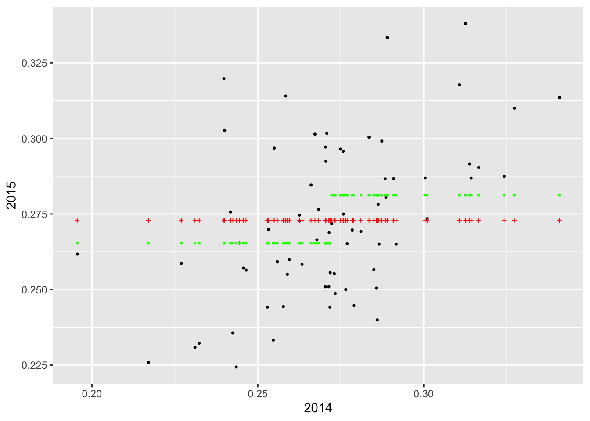
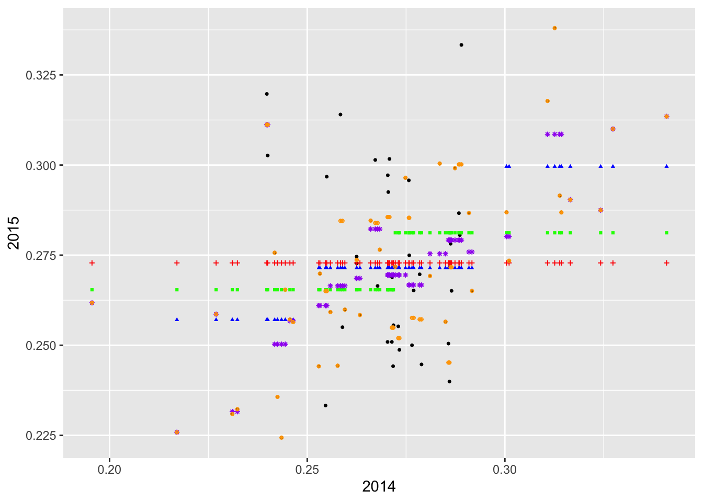

Lecture 4: Tidy Data & Regression Introduction
Tidy Data
Before we jump into any analysis, we wanted to start by discussing the notion of “tidy data”.
To make the above discussion much more concrete, let’s go back to the dataset we created in the challenge question at the end of Problem Set 3. Each line of this tbl is a “player-season”. Printing out the tbl, we see that there is a separate row for each “player-season”.
> library(tidyverse)
> load("data/batting_2014_2015.RData")
> batting_2014_2015
# A tibble: 140 × 3
# Groups: yearID [2]
playerID yearID BA
<chr> <int> <dbl>
1 abreujo02 2014 0.317
2 abreujo02 2015 0.290
3 altuvjo01 2014 0.341
4 altuvjo01 2015 0.313
5 andruel01 2014 0.263
6 andruel01 2015 0.258
7 aybarer01 2014 0.278
8 aybarer01 2015 0.270
9 bautijo02 2014 0.286
10 bautijo02 2015 0.250
# … with 130 more rowsIn order to study the relationship between a player’s 2014 batting average and his 2015 batting average, it will be more convenient to store the data as below.
# A tibble: 70 × 3
playerID `2014` `2015`
<chr> <dbl> <dbl>
1 abreujo02 0.317 0.290
2 altuvjo01 0.341 0.313
3 andruel01 0.263 0.258
4 aybarer01 0.278 0.270
5 bautijo02 0.286 0.250
6 beltrad01 0.324 0.287
7 blackch02 0.288 0.287
8 bogaexa01 0.240 0.320
9 brantmi02 0.327 0.310
10 braunry02 0.266 0.285
# … with 60 more rowsIn this format, we have a row for each player and two columns for his batting averages, one for 2014 and one for 2015. In order to convert our tbl into this format, we use spreading.
> batting_2014_2015 <-
+ batting_2014_2015 %>%
+ spread(yearID, BA)When we print out batting_2014_2015 now, we notice that
it is easier to read.
Predicting Batting Averages
Imagine there’s one more player who played in both 2014 and 2015 but who is not in our dataset. Without knowing anything else about the player, how could we predict their 2015 batting average using the data that we have? The simplest thing (and as it turns out the best thing) to do in this case is to use the overall mean of the 2015 batting averages in our dataset to predict the batting average of this extra player.
Now what if we also told you this extra player’s 2014 batting average? Can we improve on this simple prediction? In this section, we will propose several different ways of predicting 2015 batting average using 2014 batting average. In order to pick the best one, we can assess how well each method predicts the actual 2015 batting averages in our tbl. We will add columns to our tbl containing these predictions. To get things started, let’s add a column containing the overall mean of the 2015 batting averages. It turns out that this mean is 0.273, whereas the mean 2014 batting average is 0.272.
> batting_2014_2015 <-
+ batting_2014_2015 %>%
+ mutate(yhat_0 = mean(`2015`))If the 2014 batting average had no predictive power at all, then this overall mean will be the best prediction model possible, given what data we have. Plotting the 2015 batting averages against the 2014 batting averages allows us to assess visually whether there is any relationship between the two variables. We have added dashed red horizontal and vertical lines at the overall means of the 2014 and 2015 data, respectively.
> ggplot(batting_2014_2015) +
+ geom_point(aes(x = `2014`, y = `2015`), col = 'black', shape = 16, size = 0.9) +
+ geom_hline(yintercept = 0.273, col = 'red', lty = 2) +
+ geom_vline(xintercept = 0.272, col = 'red', lty = 2)
It certainly looks like there is a relationship! So it’s at least plausible that if we use the 2014 batting averages to make predictions for 2015, we can do better than relying on just the average of the 2015 averages.
Looking carefully at the plot, we see that most players with below average batting averages in 2014 tended to also have below average batting averages in 2015. Similarly, most players with above average batting averages in 2014 tended to have above average batting averages in 2015.
One way to improve on the simple prediction above would be as follows:
- Divide the players into two groups, one for those with above average BA in 2014 and one for those with below average BA in 2014.
- Average the 2015 BA within each of these groups and use these averages as the prediction for each member of the group.
In order to do this, we will need to mutate our tbl
batting_2014_2015 with a column indicating to which group
each player belongs. Then we can pass this column to
group_by() and compute the average BA_2015 within each
group. To create the column indicating group membership, we will use the
powerful cut() function, which divides the range of a
numerical vector into intervals and recodes the numerical values
according to which interval they fall.
The following code chunk does precisely that with two more steps: once we have made our predictions, we ungroup the tbl and we can drop the column indicating the interval in which our observation falls.
> batting_2014_2015 <-
+ batting_2014_2015 %>%
+ mutate(bins = cut(`2014`, breaks = c(0.15, 0.272, 0.40))) %>%
+ group_by(bins) %>%
+ mutate(yhat_1 = mean(`2015`)) %>%
+ ungroup() %>%
+ select(-bins)When we run this code and print out our tbl, we see that there is a
new column called “yhat_1” that contains our new predictions. Before
proceeding, we should talk a bit about the syntax use in
cut(). The first argument is the variable we want to
discretize. The next argument, breaks = is a vector that
tells R where the endpoints of these intervals are. These are often
called “cut points” In this particular case, we wanted to divide the
players into those with below average batting averages in 2014 and above
average batting averages in 2015. The first element of the cut point
vector, 0.15 is much less than the smallest BA_2014 value, whereas the
second elements, 0.272, is the overall mean of the BA_2014 values. The
last element, 0.40 is much greater than the largest BA_2014 value.
Now that we have two different ways of predicting 2015 batting averages, let us see how they compare, visually.
> ggplot(batting_2014_2015) +
+ geom_point(aes(x = `2014`, y = `2015`), col = 'black', shape = 16, size = 0.9) +
+ geom_point(aes(x = `2014`, y = yhat_0), col = 'red', shape = 3, size = 0.75) +
+ geom_point(aes(x = `2014`, y = yhat_1), col = 'green', shape = 15, size = 0.75)
Visually it appears that the green squares (corresponding to yhat_1) are a bit closer to the actual values than the red crosses (corresponding to yhat_0). This would suggest that dividing the players into the two bins according to their 2014 batting average and using the average BA_2015 value within each bin as our forecast was better than using the overall average BA_2015 value for all players.
Of course, we can continue with this line of reasoning and divide the
players into even more bins. When we do that, instead of hand-coding the
vector of cut points, we can use the function seq() which
generates a vector of equally spaced numbers. To demonstrate, suppose we
wanted to divide the interval [0,1] into 10 equally sized intervals:
(0,0.1], (0.1, 0.2], …, (0.9, 1]. To get the vector of cutpoints, we
need to tell seq() either how many points we wanted or the
spacing between the points:
> seq(from = 0, to = 1, length = 11)
[1] 0.0 0.1 0.2 0.3 0.4 0.5 0.6 0.7 0.8 0.9 1.0
> seq(from = 0, to = 1, by = 0.1)
[1] 0.0 0.1 0.2 0.3 0.4 0.5 0.6 0.7 0.8 0.9 1.0So let’s say we wanted to divde the 2014 batting averages into intervals of length 0.05 and predict 2015 batting averages using the average BA_2015 values within the resulting bins. We could run
> batting_2014_2015 <-
+ batting_2014_2015 %>%
+ mutate(bins = cut(`2014`, breaks = seq(from = 0.15, to = 0.4, by = 0.05))) %>%
+ group_by(bins) %>%
+ mutate(yhat_2 = mean(`2015`)) %>%
+ ungroup() %>%
+ select(-bins)We can also visualize our new predictions, this time with blue triangles
> ggplot(batting_2014_2015) +
+ geom_point(aes(x = `2014`, y = `2015`), shape = 16, size = 0.9) +
+ geom_point(aes(x = `2014`, y = yhat_0), col = 'red', shape = 3, size = 0.75) +
+ geom_point(aes(x = `2014`, y = yhat_1), col = 'green', shape = 15, size = 0.75) +
+ geom_point(aes(x = `2014`, y = yhat_2), col = 'blue', shape = 17, size = 0.75)
It appears that we are able to perfectly predict the 2015 batting average of the player with the lowest batting average in 2014. Why do you think this was the case?
Let’s add two more predictions in which we divide the 2014 batting averages into bins of length 0.005 and 0.001. The code below generates these predictions, saves them to columns called “yhat_3” and “yhat_4” in our tbl, and then adds the predictions to the plot in purple and orange.
> batting_2014_2015 <-
+ batting_2014_2015 %>%
+ mutate(bins = cut(`2014`, breaks = seq(from = 0.15, to = 0.4, by = 0.005))) %>%
+ group_by(bins) %>%
+ mutate(yhat_3 = mean(`2015`)) %>%
+ ungroup() %>%
+ select(-bins)
> batting_2014_2015 <-
+ batting_2014_2015 %>%
+ mutate(bins = cut(`2014`, breaks = seq(from = 0.15, to = 0.4, by = 0.001))) %>%
+ group_by(bins) %>%
+ mutate(yhat_4 = mean(`2015`)) %>%
+ ungroup() %>%
+ select(-bins)
> ggplot(batting_2014_2015) +
+ geom_point(aes(x = `2014`, y = `2015`), shape = 16, size = 0.9) +
+ geom_point(aes(x = `2014`, y = yhat_0), col = 'red', shape = 3, size = 0.75) +
+ geom_point(aes(x = `2014`, y = yhat_1), col = 'green', shape = 15, size = 0.75) +
+ geom_point(aes(x = `2014`, y = yhat_2), col = 'blue', shape = 17, size = 0.75) +
+ geom_point(aes(x = `2014`, y = yhat_3), col = 'purple', shape = 8, size = 0.75) +
+ geom_point(aes(x = `2014`, y = yhat_4), col = 'orange', shape = 10, size = 0.75)
Assessing Predictive Performance
We now have a couple of different ways of predicting BA_2015. Qualitatively, the predictions in purple (formed by binning BA_2014 into very small intervals) appear to fit the observed data better than the blue, green, and red predictions. To assess the predictions quantitatively, we often rely on the root mean square error or RMSE. This is the square root of the mean square error (MSE), which is computed by averaging the squared difference between the actual values and the predicted values.
> summarize(batting_2014_2015,
+ rmse_0 = sqrt(mean((`2015` - yhat_0)^2)),
+ rmse_1 = sqrt(mean((`2015` - yhat_1)^2)),
+ rmse_2 = sqrt(mean((`2015` - yhat_2)^2)),
+ rmse_3 = sqrt(mean((`2015` - yhat_3)^2)),
+ rmse_4 = sqrt(mean((`2015` - yhat_4)^2)))
# A tibble: 1 × 5
rmse_0 rmse_1 rmse_2 rmse_3 rmse_4
<dbl> <dbl> <dbl> <dbl> <dbl>
1 0.0257 0.0244 0.0226 0.0185 0.0113The RMSEs confirm what we could see visually: the purple predictions fit the data much better than the blue, green, and red predictions. Moreover we see that the predictions formed by binning into smaller intervals yielded smaller RMSEs than the predictions formed by binning into larger intervals.
Despite the fact that the orange predictions are even better than the purple predictions, we notice something worrying about these two predictions: they are not monotonic. Intuitively, we would expect that players with larger 2014 batting averages have, on average, larger 2015 batting averages than players with smaller 2014 batting averages. The reason that our predictions are not monotonic is that some of the bins contain only a single data point.